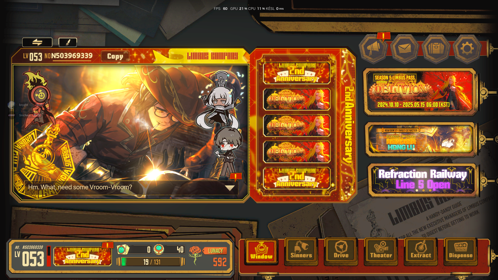

Hát ha egy olyan ember vagy aki szereti a turn base story játékokat akkor ez pont a te játékod.
Ahogy belépsz a játékba van 12 alap karaktered akikből több és erősebb változatot tudsz szerezni már a játék elején mivel sok Lunacyt (Játék beli pénzt) kapsz már a legelején amivel van esélyed már a legelején egy két jó karakter variánst nyitni. Maga a játékmenet ahogy mondtam turn base story játék de nagy stragiák kellenek hozzá és szerencse, mivel a fight system nagyrészt azon is múlik mivel attól függ, hogy milyen erős lesz a támadásod, hogy egy érmén fejet vagy írást dobnak aminek meg megint lehet növelni az esélyeit de arra most külön nem térnék ki, de akit nagyon érdekel lesz egy link az oldal legalján ott utána tudsz olvasni.
Maga a karakter szerzési rendszer "gachán" alapul amibe ha olyan karaktert kapsz aki már megvan akkor egy megadott shard mennyiséget kapsz cserébe, amit beválthatsz karakter variánsra amit te választasz.
A játék storyja is elég érdekes tud lenni, de ha nem érdekel a story nagyon akkor nyugodtan áttudod skippelni mint ahogy én is tettem az elején. Később megjött a kedvem végül olvasni a storykat és ezért kitaláltak egy olyan opciót hogy amit kivittél storyt már azt visszatudod olvasni a theater menünél bármikor. Személyesen mi nagyon ajánljuk ezt a játékot kis unalom űzőnek, főleg hogyha vannak barátjaid, mert ha ebbe a játékba bejelölitek egymást tudjátok használni egymás karakterét csatákba.
Ha pedig nem akarsz barátkozni akkor is tudsz játszani a játékban mivel van egy AI rendszer ami segít neked a csatákban és ha jól játszol akkor elég erős karaktereket tudsz szerezni.
https://steamcommunity.com/sharedfiles/filedetails/?id=2975618166
